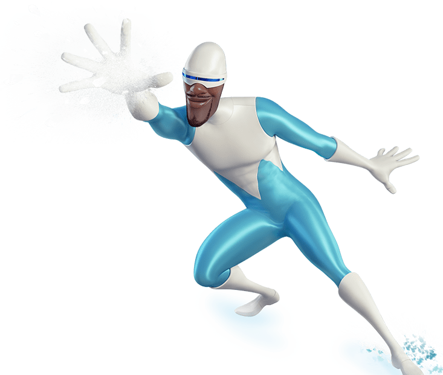
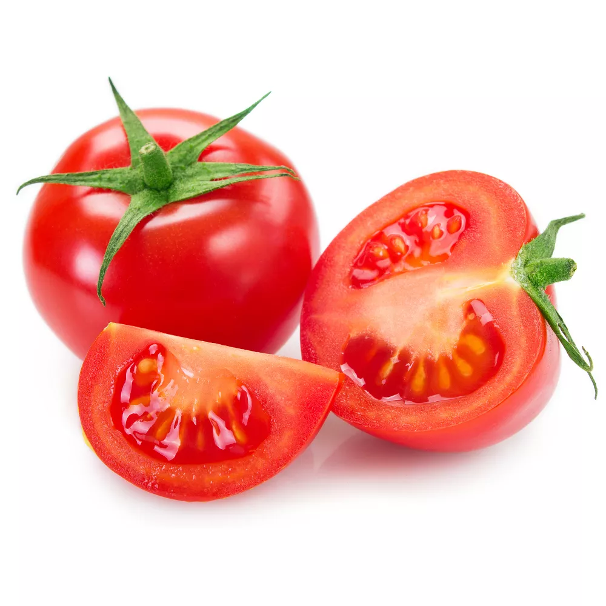
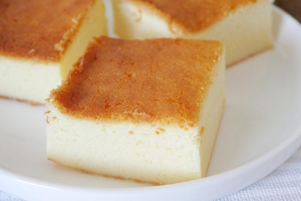

<W tabelach znajdują się poszczególne obiekty>
 |
| Obiekt: Mrożon Typ: Dobry, Bohater Numer: 67 Każdy kto go spotka powinien zachować ostrożność(jak z każdym obiektem) Strzela lodem i śniegiem z rąk, potrzbuje stałego dostpu do wody, gdyż osłabnie. Ratuje ludzi i zwierzęta z rąk "Ognia" bardzo niebezpiecznego Bytu. Moc Stworzenia Pomarańczorynki |
|  |
| Obiekt: Pomidorki Typ: Zły, Wróg Numer: 69 Każdy kto go spotka powinien natychmiast uciekać. Używa soku pomidorowego do ubrudzenia Cię, dlatego noś ubrania inne niż białe Jest podwładnym stwórcy "Ptoszka", wykonuje jego rozkazy. Moc Stworzenia Japuszkowego |
 |
| Obiekt: Sernik Typ: Bojaźny, Srnik-Sernikowy Numer: 01 Każdy kto go spotka powinien mu dawać komplementy, by był smaczny. Jeśli go wystraszysz to zacznie strzelać rodzynkami(mogą wywołać wymioty) Można z nim się zaprzyjaźnić, ale na krótko , z zasad nażyconych przez "Ptoszka" Karzdy sernika zje, chodźby miał cię uratowac MROŻON i tak zjesz sernika :( Vifonum |
 |
| Obiekt: WOODY Typ: Dobry, Ma spektrum... Numer: 02 Jest Giga Sigmą, doprowadza "Somsiada" do szału, nie raz zdarza mu się zapchać muszlę klozetową papierem, spalić dom, czy wyskoczyć przez pokład statku. Woody nie może w pewnych okolicznościach uciec od "Somsiada". Jak go uwidzi nie może się powstrzymać by do niego nie podejść. Uwilbia dostać DUŻY ŁOMOT. Buldak |